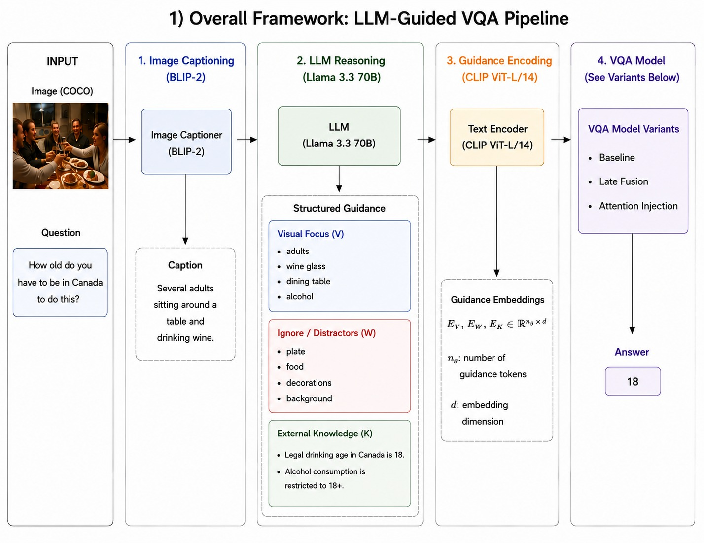
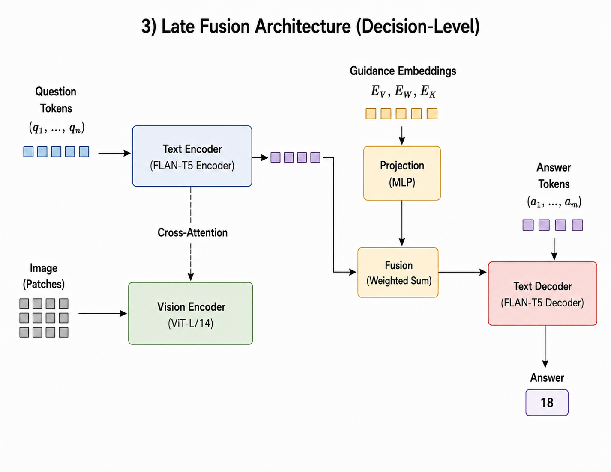
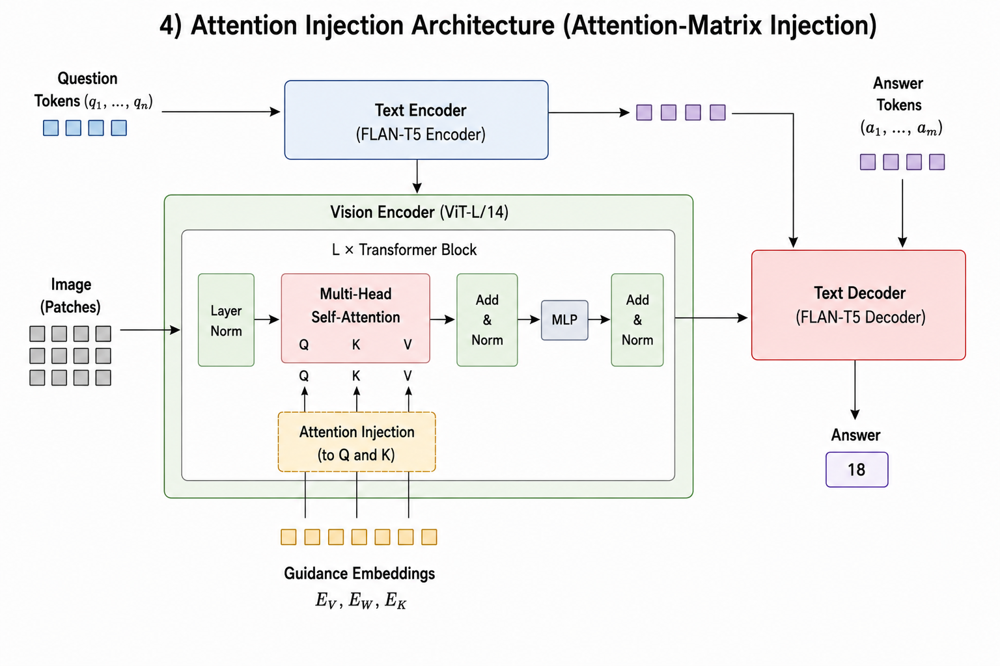
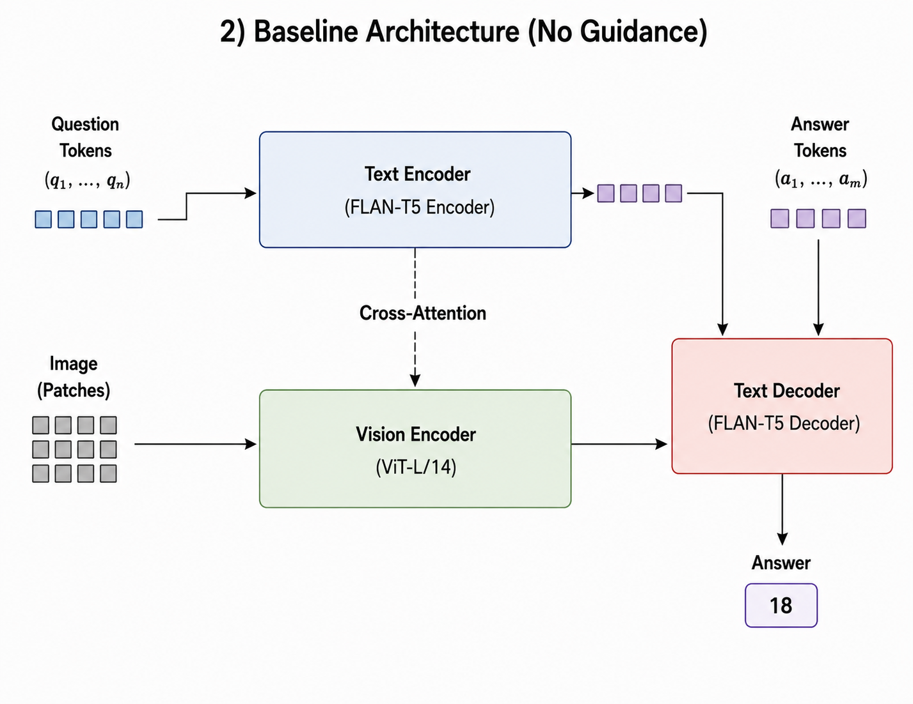
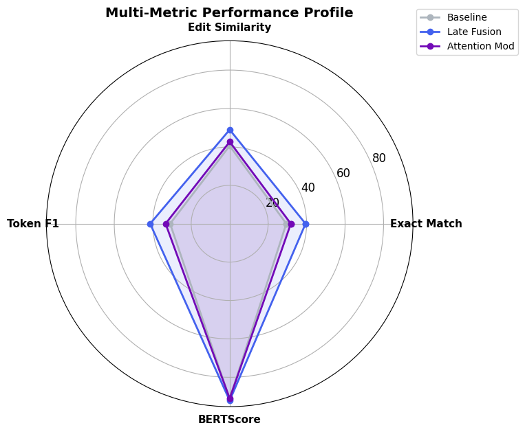
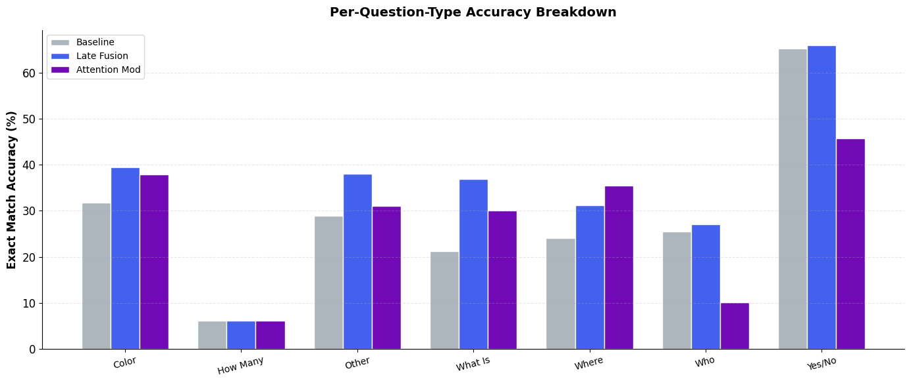
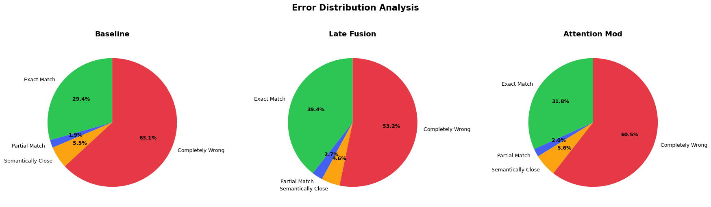
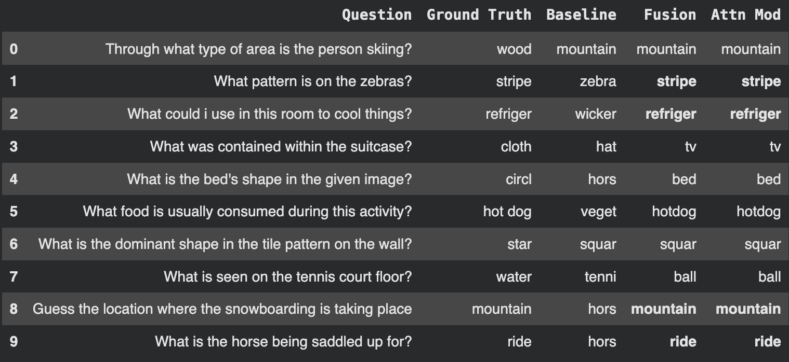

Knowledge-based Visual Question Answering (VQA) requires reasoning that extends beyond visible image content, demanding external commonsense and factual knowledge. While recent work leverages Large Language Models (LLMs) as knowledge sources, the question of how deeply such guidance should be integrated into a vision language architecture remains underexplored.
In this work, we generate structured reasoning guidance — visual_focus concepts, distractor elements, and external knowledge — using Llama 3.3 70B and systematically compare two integration strategies within a unified frozen ViT + FLAN-T5 framework on the OK-VQA benchmark: decision-level late fusion and attention-matrix injection.
Key Finding: Contrary to the prevailing assumption that deeper integration is superior, we find that shallow late fusion achieves the strongest results (39.4% exact match, +10.0 over the no-guidance baseline), outperforming deep attention modification (31.8%) under data-scarce fine-tuning. We further contribute an LLM-based augmentation pipeline that expands training data more than tenfold via question paraphrasing. Our findings indicate that integration depth must be matched to the data regime.
Why OK-VQA needs external factual knowledge beyond pixel data
End-to-end pipeline: Captioning, Structured Reasoning, and Downstream Integration

Figure 1: Overall LLM-guided VQA framework showing offline caption generation (BLIP), structured reasoning extraction (Llama 3.3 70B), guidance projection (CLIP), and downstream integration variants.

The projected guidance vector $\mathbf{P}$ is concatenated with the global CLS token $\mathbf{z}_{\mathrm{cls}}$ of the frozen Vision Transformer:
The fused feature vector $\mathbf{h}_0$ is prepended as a single prefix token to the FLAN-T5 input embeddings.

The guidance vector $\mathbf{P}$ directly modifies the Query and Key projections inside the self-attention blocks of the last 6 ViT layers:
where $\alpha$ is a learnable scale and $g = \sigma(\mathbf{w}_g^{\top} \hat{\mathbf{P}})$ is a per-sample gate. The modified ViT layers are unfrozen to allow joint adaptation.

Standard cross-modal setup without external knowledge guidance:
Visual information is extracted solely from the image and passed as a prefix token to FLAN-T5.
Evaluation on the augmented OK-VQA validation subset under identical fine-tuning
| Strategy | Depth | Exact Match (%) | Edit Sim. (%) | Token F1 (%) | BERTScore | $\Delta$ EM |
|---|---|---|---|---|---|---|
| Baseline (no guidance) | — | 29.44 | 40.57 | 30.97 | 91.21 | — |
| Late fusion (shallow) 🏆 | shallow | 39.44 | 48.97 | 41.34 | 92.14 | +10.00 |
| Attention injection | deep | 31.80 | 42.66 | 33.33 | 91.00 | +2.36 |
* All models evaluated with exact match, token F1, Levenshtein edit similarity, and BERTScore on the top-500 answer filtered split.

Radar comparison across 4 evaluation metrics. Late fusion strictly encloses both baseline and deep attention injection.

Late fusion improves across all question categories. Attention injection helps on Where questions but drops on Who and Yes/No.

Late fusion drops completely wrong answers from 63.1% to 53.2%, successfully converting errors into exact matches.

The baseline names salient objects (e.g. "zebra", "wicker"), while guidance corrects predictions to the requested attribute or function ("stripe", "refrigerator").
Three technical factors explaining why decision-level fusion outperforms attention injection
Late fusion leaves the frozen Vision Transformer computation untouched. Attention injection perturbs queries and keys in 6 of 12 layers and unfreezes them. In low-data regimes (~29k training samples), the model struggles to re-stabilize its visual representations, leading to degraded performance.
The guidance vector $\mathbf{P}$ is a single global direction (mean over CLIP concept embeddings). Broadcasting this single vector across all $N$ image patches ($\mathbf{1}^{\top}$) cannot express which region each concept refers to. Late fusion treats $\mathbf{P}$ as a global semantic summary at the decision level, perfectly matching its true granularity.
Attention injection introduces per-layer projections, gates, and scaling factors that must be learned jointly with unfrozen ViT layers. With ~6 samples per class, the simpler hypothesis space of late fusion (a single linear fusion layer) avoids overfitting and wins cleanly.
Published on Hugging Face Datasets with native Parquet support & in-browser viewer
from datasets import load_dataset
# Load the OK-VQA LLM-augmented dataset (36,442 rows)
dataset = load_dataset("rishii100/okvqa-llm-augmented")
# Access sample fields
sample = dataset["train"][0]
print("Question:", sample["question"])
print("Visual Focus:", sample["visual_focus"])
print("Knowledge:", sample["knowledge"])
print("Answer:", sample["answer"])from huggingface_hub import hf_hub_download
# Download best Late Fusion model checkpoint
model_path = hf_hub_download(
repo_id="rishii100/knowledge-guided-vqa-models",
filename="best_fusion_model.pth"
)
print("Downloaded checkpoint to:", model_path)@inproceedings{saha2026rethinking,
title = {Rethinking LLM-Guided Visual Question Answering: Does Deeper Knowledge Integration Really Help?},
author = {Saha, Aneerban and Kumar, Vijay and D., Sameer Madhav and Srivastava, Priyam and Bansal, Dhruv},
booktitle = {Proceedings of the International Conference on Applied Data and Computing Sciences (ADCIS)},
year = {2026},
url = {https://arxiv.org/abs/2610.17079}
}